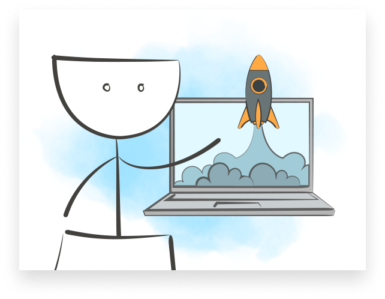

Когнитивные искажения
Эффект ИКЕА
Вы переоцениваете собственные решения, и, как следствие, недооцениваете решения других.
КАК ПРОЯВЛЯЕТСЯ
Когнитивное искажение называется так из-за того, что потребители
зачастую предпочитают покупать товары, которые они могут
собрать сами, а не уже собранные кем-то.
Мы склонны переоцнивать наши собственные решения и
недооценивать решения других. Если вы когда-то работали в
компании, которая использовала тупой внутренний инструмент
вместо более удобного готового решения, вы понимаете, о чём я
говорю.
Когнитивные искажения
Преждевременная оптимизация
Вы оптимизируете что-то задолго до того, как в этом появляется необходимость.
КАК ПРОЯВЛЯЕТСЯ
Если вы добавите аэродинамический спойлер к своему старому
автомобилю вместо ремонта мотора, то автомобиль не станет
быстрее.
Отличный пример: писать максимально подтюненный и
высокопроизводительный код для всего лишь экспериментального
проекта.
Когнитивные искажения
Искажение новизны
Вы даёте более высокую оценку тем событиям, которые произошли недавно, и недооцениваете более старые.
КАК ПРОЯВЛЯЕТСЯ
Часто это искажение настигает нас, когда нужно решение
проблемы и… о! Мы как раз только что решили подобную
проблему! Давайте использовать это же решение, потому что оно
сработало, и мы помним как!
Вы замечаете, что пользуетесь теми же рабочими методиками раз
за разом? Если да, возможно, вы смотрите на разные проблемы под
одним и тем же углом.
Когнитивные искажения
Гиперболическое обесценивание
Вы гонитесь за немедленной маленькой выгодой и игнорируете более крупную, недоступную сейчас, но доступную в будущем.

КАК ПРОЯВЛЯЕТСЯ
Вы когда-нибудь откладывали написание теста? Ловили себя на
использовании клавиш-стрелок в Vim? Поздравляю, у вас
наблюдается гиперболическое обесценивание.
Немедленная выгода от использования чего-то быстродоступного
значительно смягчает боль, которую нужно перетерпеть, чтобы
усвоить правильный синтаксис для перемещения на нужную
строчку. Но как только вы поймёте как перемещаться быстрее,
выгода в будущем намного выше. В итоге вы сохраните много
времени.
Когнитивные искажения
Ошибка планирования
Неправильно рассчитывать время необходимое для завершения задачи.
КАК ПРОЯВЛЯЕТСЯ
Одно из искажений, которое должно признать большинство из нас.
И менеджеры проекта, и сами пользователи продукта — все
склонны ставить сроки, в которые невозможно закончить
запланированное.
Это отлично выражается в старом афоризме:
Первые 90% готового кода отнимают первые 90% времени
разработки. Оставшиеся 10% отнимают вторые 90% времени
разработки.